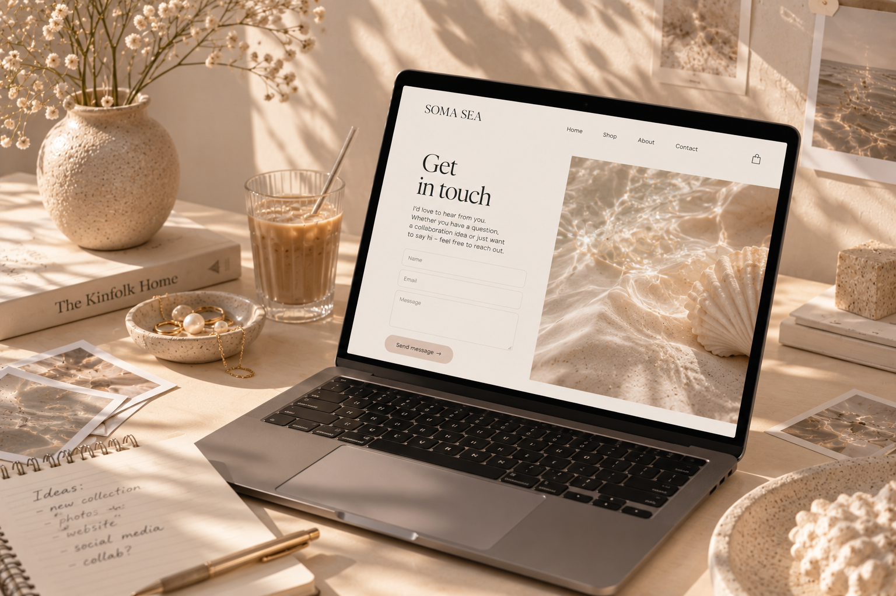
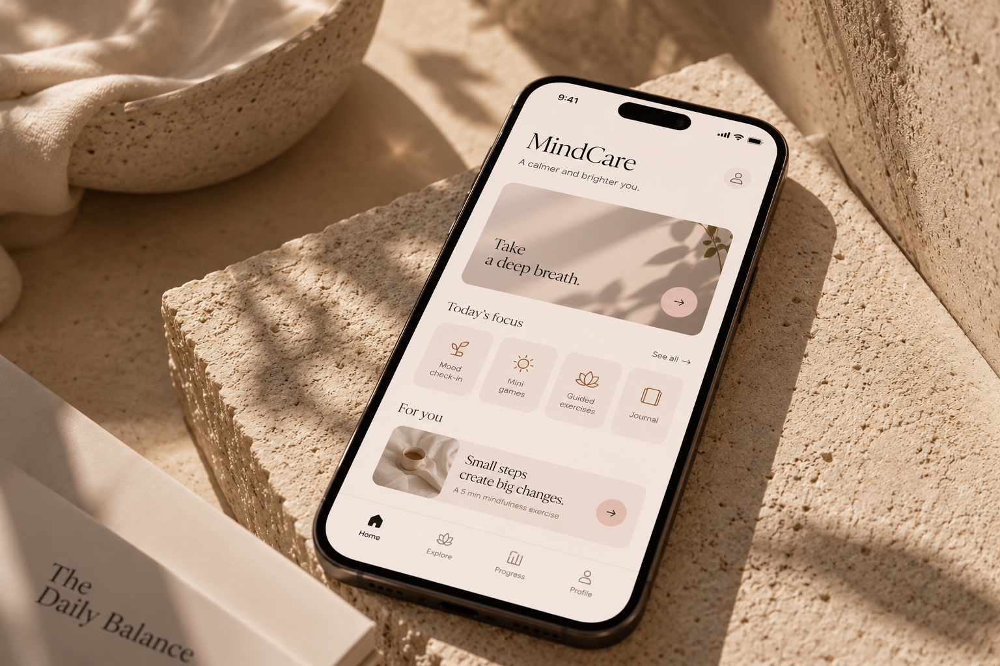

SELECTED WORK / 2024 — 2026
Projects built around people and experience.
A selection of UX/UI, research and digital design projects.

01
Gmbl Insight
UX DESIGN
A digital treatment platform where I worked with structure, user flows, wireframes and prototypes.
VIEW PROJECT →
02
Talkio
UX/UI DESIGN
A digital conversation tool where I worked with research, structure, user flows, components and prototypes.
VIEW PROJECT →
03
Kontrollavgift.se
UX/UI + RESEARCH
Improving a user journey through wireframes, design and usability testing.
VIEW PROJECT →
04
MindCare
UX/UI DESIGN
A mobile app concept with daily check-ins, activities and a supportive user experience.
VIEW PROJECT →